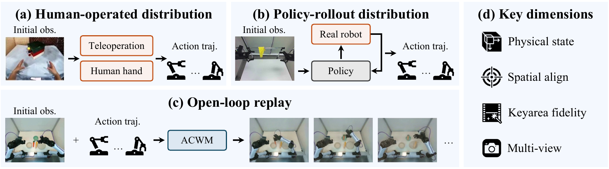

Validation · ep000014 · Top View
01 · RIGID · AGIBOT G2 VALIDATION
Pick Fruit
Rigid-Body Manipulation
A real-world benchmark for testing whether predicted futures remain coherent with the actions that produce them.
AgiBot G2 · 30s · 8 Models
| Rank | Model | Contributor | Single-View Score | Multi-View Score | PSC | KIAF | ISA | MVAC |
|---|---|---|---|---|---|---|---|---|
| 01 | 78.07 | 78.40 | 74.20 | 81.60 | 83.70 | 76.80 | ||
| 02 | 70.47 | 71.80 | 66.40 | 73.20 | 70.50 | 65.40 | ||
| 03 | 69.27 | 69.20 | 73.50 | 65.10 | - | - | ||
| 04 | 68.17 | 72.10 | 69.80 | 62.60 | - | - | ||
| 05 | 66.80 | 68.70 | 61.30 | 70.40 | - | - | ||
| 06 | 58.00 | 61.00 | 55.00 | 58.00 | - | - | ||
| 07 | 45.00 | 45.00 | 48.00 | 42.00 | - | - | ||
| 08 | 35.00 | 38.00 | 35.00 | 32.00 | - | - |
No published model results for this platform and duration yet.
AgiBot G2 · 30s · All models shown equally.
Overview
WorldOracle evaluates action-conditioned world models against paired real-world executions. Given the same initial observation and low-level action sequence, it asks whether a predicted rollout reproduces the real physical consequences and task-state transitions. The benchmark measures physical state correctness, interaction spatial alignment, key interaction area fidelity, and multi-view action coherence across different interaction dynamics and embodiments. Its evaluation suite includes long, multi-segment episodes with both successful and failed executions, revealing distinct model strengths and failure modes across varied action outcomes and behavior distributions.
Framework
WorldOracle evaluates ACWMs against paired real-world executions from two data distributions: human-operated trajectories and policy rollouts collected on a real robot. For both distributions, each recorded action trajectory is replayed by the ACWM and compared with its paired real execution.

Real-World Ground Truth
Every reference is a recorded physical rollout—not a simulator-rendered target. Paired executions preserve both successful and failed outcomes across rigid, deformable, fluid, and articulated-object interactions.
Rigid-Body Manipulation
Deformable-Object Interaction
Fluid Interaction
Articulated-Object Interaction
Embodiments
WorldOracle evaluates heterogeneous agents and action spaces across human-operated and policy-rollout distributions using paired real-world execution references.
Validation GT · ep000014 · Top View
Real-World Bimanual Manipulation
Validation GT · Hang Towel · ep000002 · Egocentric View
Success and Failure
Real-world data includes both successful actions and failed attempts. Explore recorded GT excerpts from four tasks—capturing not only what works, but also missed grasps, dropped objects, and spills.
The mango is placed in the basket and remains inside.
The gripper withdraws while the mango remains in the basket.
AgiBot G2 · Recorded action excerpts, not whole-episode labels. The two clips show separate attempts and are not time-aligned.
Showing Pick Fruit success and failure excerpts.
Metrics
WorldOracle measures execution coherence along four complementary dimensions. The first three use the primary top-head view; multi-view action coherence uses all three synchronized views.
At each interaction segment’s outcome keyframe, a VLM judges physical-state criteria annotated from the paired real-world keyframe. Criterion scores are averaged within segments and then across the episode.
Criteria → Segment Score → Episode Average
At sampled frames, DINOv3 features inside annotated object and arm or hand masks are matched between real and predicted observations. Spatial displacement and correspondence confidence reward action-relevant entities near their real positions.
Masked Features → Spatial Matches → Temporal Average
Within masked regions of manipulated objects and robot arms or hands, PSNR, LPIPS, and V-JEPA measure pixel, perceptual, and semantic fidelity. Their normalized scores are combined geometrically, so one severe local error lowers the result.
Interaction Crops → PSNR / LPIPS / V-JEPA → Geometric Mean
Robot-arm alignment is measured independently against the paired real execution in synchronized top, left-hand, and right-hand views, then aggregated. A frame scores highly only when motion is aligned in every view.
Per-View Arm Alignment → Cross-View Average → Episode Average
Benchmark Coverage
AgiBot G2
YAM
Human Hand
Human-Operated
Policy-Rollout
IRASim · Ctrl-World
DreamDojo · Cosmos 3
GE-Sim 2.0